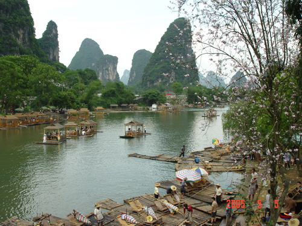
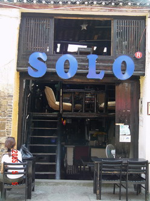
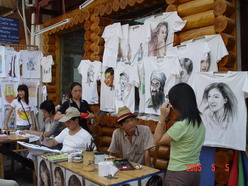
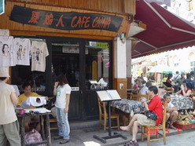
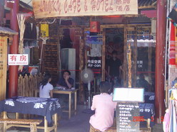

桂林回来后的第二天下午开始发烧，旅游和爱情一样会有副作用。
然而回家的感觉真的很好，虽然多了点对城市的陌生感，散漫在贵州广西的心情还未完全收敛回这个我生活的城市中来，但可以躺在舒服干净的被子里塌实的沉睡，是整个旅行中渴望的事情之一。妹妹在贵州时对我说她很想吃星巴克的芒果星冰乐，呵呵~~我也想吃呢。傍晚下班后去眼镜店买300度的隐型眼镜，顺便在旁边的书店看看现在都在卖些什么书。看到两个气质独特的中年妇女，不同的场所遇见不同的人，这种类型的女人大概也只能在书店里遇见了。旅行时遇见的又是什么样的人？此时的我飘忽在异乡和南京之间，在不确定中犹豫地活着...旅游是找寻自我的一个途径。
桂林遇龙河

阳朔西街印象






去过从江的岜沙之后妹妹不愿当天晚上继续留宿在月亮山宾馆所以去不了小黄，中午便起程赶往桂林的朋友家中。短短280多公里的路程，汽车开了10个小时左右才到。一路颠簸得人筋骨松软，合着行李和汽车一起按照道路曲线上下起伏，这是记忆中的跋涉。不知道是气候还是气温的确升高的原因，除了郎德的早晨下了一小时左右的雨之外，一直都是极其闷热，滚烫的太阳照在皮肤上，带的长袖外套基本没派上用场。我甚至还将晚上随意穿着的短裤也拿出来外出游玩时穿，图个凉快。虽然这些山寨与世隔绝一般，附近冷饮的价格和城市里的却丝毫不差。到桂林后我丢失了另一样喜欢的东西：拖鞋。哇，这应该是我丢失物品最多的一次旅行了。
除非顺道去桂林，不然不用刻意计划。为了陪妹妹我舍弃了本该花在贵州的一天时间，将之放在桂林。如果您想去阳朔那种地方过几天飘飘然的小资生活，那么去云南的大理和丽江吧，那里不会令人失望的，同时还有许多人文的东西可感受！桂林给我的印象是单调的，也许桂林的山还有点不同之处吧，其他实在没什么感受。

告别桂林！
5 Responses to “城市的陌生感”
2005-05-11
我今年的新春游也是丢东西最多的一次.遇龙河的照片拍得比实景漂亮:)
2005-05-11
拖鞋可能是最容易遗忘的旅游物品。偶丢了两次，一双在丽江，一双在康定。都是平常穿习惯的，样子、颜色和穿着的感觉一点都没忘。每次离开宾馆的时候都会仔细对着物品清单查看房间，怎么独独会把它们给忘了呢？
热带与亚热带过渡区间夏天的湿热对生活在江浙沪的朋友们来说是最难熬了。呆在长途车上，皮肤表面开始变的粘粘呼呼，这种不爽的感觉持续弥漫整个行程让人无法忍受。一出宾馆，热浪就把你旅行的兴奋打翻在地。在版纳没见到绿豆冰卖，倒是一口气买了N个菠萝，躲在宾馆里拼命的啃那，缓解不能出门的焦虑。
出门久了，就会有回家的冲动。但要结束快乐并痛苦的旅行，又会有点惋惜留恋起来。
回家第一件事一般都是好好洗个澡再大睡一觉。
醒来后翻来覆去的看着拍的无数照片，开始默默的怀念回味起旅行的细节和感觉了。
不经意的和朋友聊起起这些旅程，把快乐、新鲜、害怕、艰苦的事分享出去。旅行的经历真是一份绵绵不绝的精神财富，这种财富在繁华的城市中无法积累。
2005-05-11
唉，你打击我，我下个礼拜去桂林，票都出了...
2005-05-14
似乎桂林可以pass掉了:-(
2005-12-11
四年后的遇龙河成这样了？河边的小屋应该还在，在那里吃了半个月的青菜。：（
Leave A Reply
存档只读，评论已关闭。